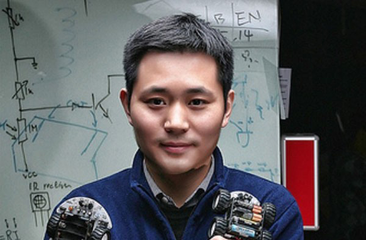
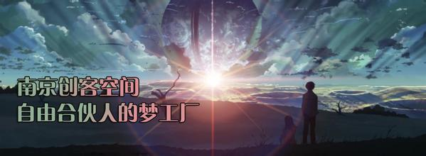

A guest is creating the future of China's economic and social development Premier Li Keqiang in the government work report on the adjustment of industrial structure, pointed out that in 2014 China's efforts to cultivate new growth points, many of the "creative", cultural and creative industries to flourish. This is the first time a guest writes the government work report. Prime Minister Li Keqiang for the record has been very seriously, to give a high evaluation. In January 4, 2015, Li Keqiang visited it Shenzhen firewood record passenger space, you experience the younger guests creative products. The prime minister said: "creating fully demonstrated the vitality of entrepreneurship, innovation of the public. This dynamism and creativity will become the future of China's economic growth engine." |
||
|  |  |
 |
Chen Ye Chong off MontanaYe Chen, a well-known record off site DFrobot founder. From the University of Nottingham PhD in engineering, he returned to Shanghai Ye Chen founded the DFROBOT company, this is named DreamWorks open source hardware and robot, which is DreamFactoryRobot Abbreviation, turned out to be leaves Chen and the majority of passengers who create habitat exchange of paradise |
The new plant Li DaweiI believe in open source hardware industry people, not many did not know David Lee. He has been involved in the famous director Steven Spielberg interactive multimedia project, the Disney project the virtual world, but also for Facebook and other famous enterprises in the design of social applications. His 20 years in the software industry, and has been committed to the open source software movement. In recent years, he conform to the open source hardware this trend, began his trip to the hardware. |
Chong guest preacher - Cheng ChenBy insiders as "big bull" Cheng Chen believes that a group like the hands off the record, and strive to realize their own ideas of people. But his eyes off the record just is not simply a group of people, a passenger is a culture, a variant with the development of the Internet and the rise of open source hardware slowly grow up a subculture, which is produced in the popular culture culture. This culture to promote hands-on and open sharing appeal to everyone starting from their own interest rather than the primary purpose of making money. |
|  |  |
|
Nanjing, a passenger spaceNanjing, Nanjing passenger space by a group of software, hardware and technical personnel initiated civil technology social organizations (platforms), was established in May 2012, the existing core members of 200 people, members of the professional direction covers computers, electronics, electricity, construction, Arts, machinery manufacturing, management, economics and many other fields, |
Firewood record passenger spaceFirewood record passenger space meaning to "Many hands make light" for the innovative producer (Maker) to provide free and open collaborative environment that encourages cross-border exchanges and promote the realization of ideas as well as products of. |
|